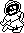
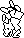
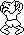
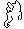

| Day, night and the werewolf |
Knight Lore's clock is a picture: the sun or the moon crossing a small window at the bottom right of the screen. When one has crossed, the other takes its place; at sunset the knight turns into a werewolf and at sunrise back again. Every sunrise is a new day, and the fortieth ends the game.
The sun or moon is not one of the forty objects but a 32-byte record of its own at sun_moon_scratchpad, laid out like one so that the ordinary sprite printer (print_sprite) can draw it. Its type is 88 for the sun and 89 for the moon, and bit 0 of that byte is how the rest of the game tells night from day. (That 88 is the sun is inferred: it is the one every game starts with, the one whose return adds a day, and the one coloured yellow.) init_sun puts the sun at the left of the window at the start of a game.
The sun, type 88.
The moon, type 89.
Every eighth frame, as the renderer finishes (draw_and_copy_rects calls print_sun_moon), the record moves one pixel to the right, and display_sun_moon_frame gives it a height from the thirteen bytes at sun_moon_yoff -- 5, 6, 7, 8, 9, 10, 10, 9, 8, 7, 6, 5, 5 -- one for every four pixels across, so it climbs, levels off and sinks. display_frame then clears the window in the buffer, draws the sun or moon, draws the two halves of the window's frame (types 90 and 186) over it, and copies the window to the screen. Because the frame goes on last, the sun rises from behind the frame's left side and sets behind its right.
The window drawn by display_sun_moon_frame in a simulator with the sun at pixel x 176, 184, 192, 200, 208, 216, 224.
And with the moon, at 200.
It starts at pixel x 176. When it reaches 225, after 49 steps -- 392 frames -- toggle_day_night swaps the type, recolours the window (colour_sun_moon: yellow for the sun, white for the moon) and starts the other at 176. A frame here is one pass of the game's loop, and that varies with how much there is to draw (end_of_frame pads a quiet frame out to a minimum), so a day has no fixed length in seconds.
Every swap sets $5BB1 to 1: a change is due. Nothing happens at once. The player's legs handler calls chk_and_init_transform first thing every frame, and it starts the change only when the player is not walking into a new room (the top four bits of +$0C) and not in the middle of a jump (bit 3). When it does start:



Types 92 to 95, the figures of the change.
From then on the legs are run by upd_92_to_95. Every fourth frame (transform_step) it makes a sound, counts a step off, and shows another of the four figures at random -- never the one already showing -- mirrored each time, which makes it spin (rand_legs_sprite). After eight steps, 32 frames, finish_transform flips bit 5 of the saved type: XOR $20 turns the knight's legs (types 16 to 29) into the werewolf's (48 to 61) or back, keeping the walking frame and the way he faces. The top half comes back as the new type plus 16, and $5BB1 is cleared.
The knight: the top half (type 34) and the legs (type 18).

The werewolf: the top half (type 66) and the legs (type 50).
He can still die while he changes: upd_92_to_95 looks at the harm bit (bit 6 of +$0D; see collision) just as the legs' own handler does. Dying cancels the change: lose_life, which starts every life, clears $5BB1 and brings him back as knight or werewolf by bit 0 of the sun or moon's type, so the new body already suits the time of day.
When the moon gives way to the sun, inc_days adds one to the day count at $5BB9, kept in binary-coded decimal for printing. The count starts at 0, with the rest of the variables. The dawn that takes it to 40 jumps to game_over, game over; any other prints the new number (print_days) and copies it to the screen. The summary at the end shows the same count as the days taken.
Once the fourteenth charm is in the cauldron, $5BC3 is set and display_sun_moon_frame returns at once: the sun stops where it is, so no more days pass and no more changes are asked for (see the charms).
The body is the type of object 0, the player's legs, and anything that wants to know reads that. (That types 16 to 29 are the knight and 48 to 61 the werewolf comes from how the handler table groups them; the code only ever tests ranges.)